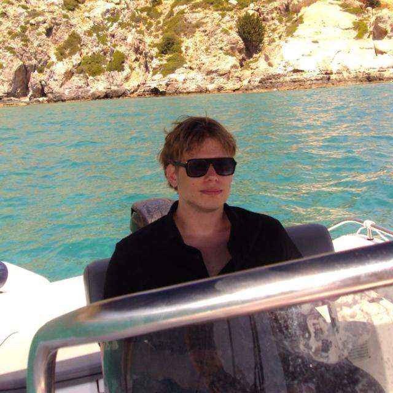

Welkom op mijn portfolio
Hallo, ik ben Dylan
Op deze website laat ik meer over mezelf, mijn projecten en mijn vaardigheden zien.
Meer over mij
Over Mij
Mijn naam is Dylan den Boer. Ik studeer Systeem Engineer bij VISTA College en ben veel bezig met IT, programmeren en andere technische projecten.
Lees meerProjecten
Tijdens mijn opleiding maak ik verschillende projecten. Naast systeembeheer ben ik ook bezig met software development en programmeer ik onder andere met Python.
Een aantal van mijn projecten zijn te vinden op mijn GitHub.
Mijn GitHub